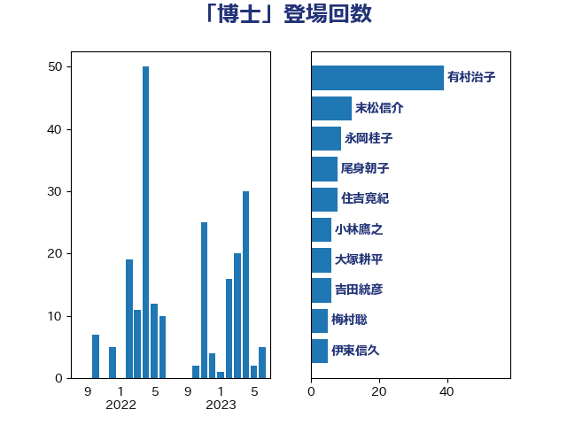

単語「博士」

| 有村治子 | 自由民主党 | 39 回 |
| 末松信介 | 自由民主党 | 12 回 |
| 永岡桂子 | 自由民主党 | 9 回 |
| 尾身朝子 | 自由民主党 | 8 回 |
| 住吉寛紀 | 日本維新の会 | 8 回 |
| 小林鷹之 | 自由民主党 | 6 回 |
| 大塚耕平 | 国民民主党 | 6 回 |
| 吉田統彦 | 立憲民主党 | 6 回 |
| 梅村聡 | 日本維新の会 | 5 回 |
| 伊東信久 | 日本維新の会 | 5 回 |
| 空本誠喜 | 日本維新の会 | 4 回 |
| 柳ヶ瀬裕文 | 日本維新の会 | 3 回 |
| 宮本徹 | 日本共産党 | 3 回 |
| 大島敦 | 立憲民主党 | 3 回 |
| 阿部弘樹 | 日本維新の会 | 2 回 |
| 金村龍那 | 日本維新の会 | 2 回 |
| 萩生田光一 | 自由民主党 | 2 回 |
| 若松謙維 | 公明党 | 2 回 |
| 福田昭夫 | 立憲民主党 | 2 回 |
| 田中英之 | 自由民主党 | 2 回 |
| 古賀友一郎 | 自由民主党 | 2 回 |
| 中島克仁 | 立憲民主党 | 2 回 |
| 高良鉄美 | 無所属 | 1 回 |
| 高橋はるみ | 自由民主党 | 1 回 |
| 高木宏壽 | 自由民主党 | 1 回 |
| 馬場雄基 | 立憲民主党 | 1 回 |
| 青木愛 | 立憲民主党 | 1 回 |
| 長浜博行 | 無所属 | 1 回 |
| 鈴木義弘 | 国民民主党 | 1 回 |
| 西村康稔 | 自由民主党 | 1 回 |
| 藤岡隆雄 | 立憲民主党 | 1 回 |
| 舩後靖彦 | れいわ新選組 | 1 回 |
| 神谷宗幣 | 参政党 | 1 回 |
| 田村貴昭 | 日本共産党 | 1 回 |
| 片山さつき | 自由民主党 | 1 回 |
| 滝波宏文 | 自由民主党 | 1 回 |
| 浮島智子 | 公明党 | 1 回 |
| 池田佳隆 | 自由民主党 | 1 回 |
| 池下卓 | 日本維新の会 | 1 回 |
| 江田憲司 | 立憲民主党 | 1 回 |
| 比嘉奈津美 | 自由民主党 | 1 回 |
| 林芳正 | 自由民主党 | 1 回 |
| 村田享子 | 立憲民主党 | 1 回 |
| 本田顕子 | 自由民主党 | 1 回 |
| 徳永エリ | 立憲民主党 | 1 回 |
| 川田龍平 | 立憲民主党 | 1 回 |
| 岸田文雄 | 自由民主党 | 1 回 |
| 岡田直樹 | 自由民主党 | 1 回 |
| 宮本岳志 | 日本共産党 | 1 回 |
| 大野泰正 | 自由民主党 | 1 回 |
| 大島九州男 | れいわ新選組 | 1 回 |
| 堂込麻紀子 | 無所属 | 1 回 |
| 北神圭朗 | 無所属 | 1 回 |
| 伊波洋一 | 無所属 | 1 回 |
| 井坂信彦 | 立憲民主党 | 1 回 |
| 中谷真一 | 自由民主党 | 1 回 |
| 上田清司 | 国民民主党 | 1 回 |
| 一谷勇一郎 | 日本維新の会 | 1 回 |